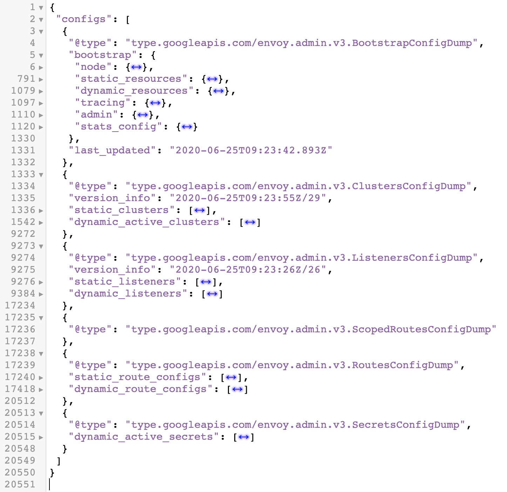
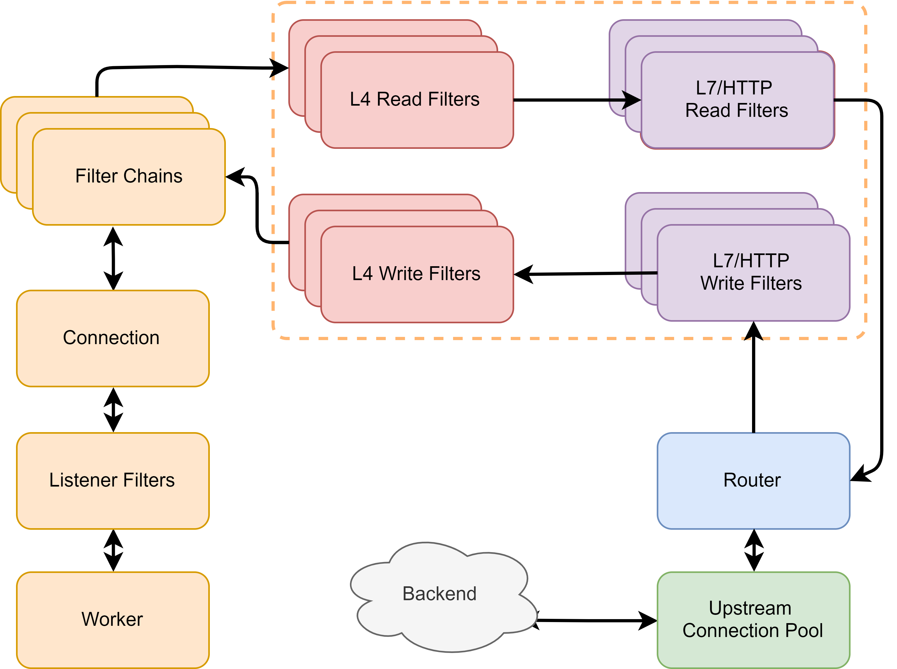
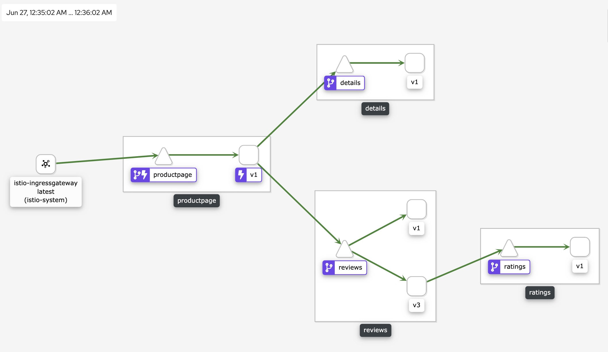
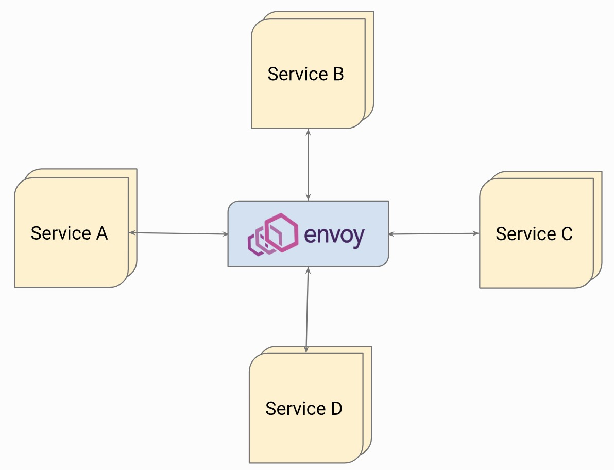
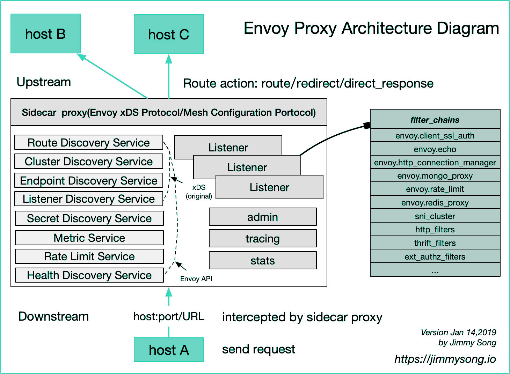
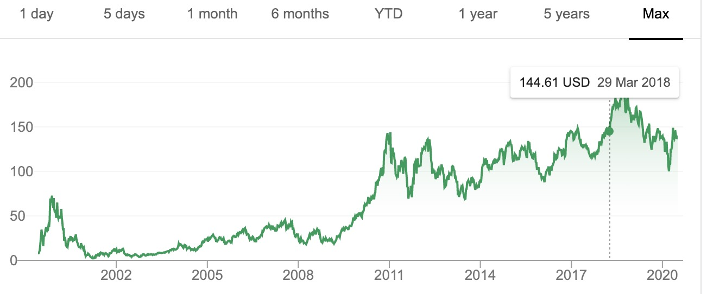

本文作者：林静，F5 软件方向解决方案架构师，历任 F5 Global Service ENE，APAC Professional Service 顾问，技术专家。拥有超过 10 多年的应用交付领域工作经验，秉承持续学习和反馈的理念，致力于现代应用体系下的应用服务研究。CNCF Kubernetes CKA 664 号认证获得者，中国首位 F5 Security Solution Expert 认证获得者。
感谢邱世达对本文的审校。
前言
Envoy，使者，使节，代表！就像其单词含义本身一样，带着一种权威感，一种全代理的神圣感。结合其本身用途与角色，真是 “人如其名”，不禁为 Lyft 点赞，不知是得到了哪位大师的指点来起这个名字。在当前火热的微服务时代下，Envoy 是个绝对的明星，用众人皆知来形容可以说一点也不为过。曾有人问我如何看 Envoy 以及在云原生时代下是否 Envoy 将取代 F5 取代 NGINX，作为一个经历了两次应用交付技术领域更迭浪潮的老兵，在本文中我将来浅谈一下 Envoy，以及试图从个人角度来理解与回答一下这个问题。为什么说浅谈一下，这真的不是谦虚，而是客观上真的没有那么深入的大规模长时间使用和研究 Envoy 的所有技术细节，因此我将结合我的从业经历与经验来对 Envoy 做一个浅谈。
星光熠熠的 Envoy
首先我们看一下 Envoy 官方是如何介绍 Envoy 的：
ENVOY IS AN OPEN SOURCE EDGE AND SERVICE PROXY, DESIGNED FOR CLOUD-NATIVE APPLICATIONS Envoy 是一个开源的边缘以及服务代理，为云原生应用而生。
从网站首页的这一段描述可以清晰的看出官方对 Envoy 的定义，简单来说就是云原生时代下东西南北流量的代理。Lfyt 公司是微服务应用架构的先导者，在大量的微服务类布道文章中我们都可以看到 Lfyt 的身影，在从单体应用大规模转向微服务架构后，一个严重的问题摆在了开发与架构人员面前，一方面 Lyft 的服务采用了多种语言开发，而采用类库来解决分布式架构下的各种问题需要进行大量的语言适配以及对代码的侵入，另一方面 Lyft 的业务都是部署在 AWS 上的，大量依赖 AWS 的 ELB 以及 EC2，但是 ELB 以及 AWS 在当时所提供的服务间流量管控、洞察与问题排除都不能满足 Lyft 的需求，正是基于这样的背景，Lfyt 于 2015 年 5 月开始了 Envoy 的开发，最早是作为一个边缘代理进行部署并开始替代 ELB，随后开始作为 sidecar 方式进行大规模部署。2016 年 9 月 14 日，Lyft 在其博客上正式对外宣布了这一项目： Envoy C++ L7 代理与通信总线。 一时间 Envoy 得到了大量的关注，Google 等公司开始贡献到这个项目里，并在一年后的 2017 年 9 月将项目捐献给 CNCF。有了 Lyft 这样一个好妈，又过继给了 CNCF 这样一个富爸，再加上同父异母的 Istio 明星兄弟的加持，可以说 Envoy 一时风光无两，赚足了眼球与开发者的支持，仅一年多点时间便从 CNCF 毕业了。
容器技术助推了企业实践 Devops 与进行微服务改造，k8s 容器编排平台则让企业能够更加自信的将更多业务从传统架构迁移到基于容器的现代基础架构之上，k8s 解决了容器编排、应用发布等问题，但是当服务之间的通信从以前的内存之间调用变成了基于 TCP 的网络通信后，网络对应用服务的影响变得更加巨大与不确定，基于传统的应用架构的运维手段无法适应与解决巨大且复杂的服务间通信洞察、排错，为了解决这样的问题，sevice mesh 应用而生，并迅速成为关注的热。Istio 项目则是此生态中最重要的玩家，Istio 的架构是一个典型的管理平面与数据分离的架构，在数据平面的选择上是开放的，但是 Istio 默认选择了 Envoy 作为数据平面。两大人气明星强强联手，让几乎同一时期的 linkerd 变得黯然失色。而在这个时间点，NGINX 同样也曾短暂的进行了 Nginmesh 项目，试图让 NGINX 作为 Istio 的数据平面，但最终在 2018 年底放弃了，为什么会放弃，这个本文后面会提到。
当前除了 Istio 选择 Envoy 作为数据平面外，以 Envoy 为基础的项目还有很多，例如 k8s 的多个 Ingress Controller 项目：Gloo, Contur, Ambassador。 Istio 自身的 Ingress gateway 与 Egress gateway 同样选择的是 Envoy。来看下其官方首页列出的 Envoy 用户，说星光熠熠一点也不为过。注意列表里的 F5，是不是很有意思。
 （Envoy 最终用户列表）
（Envoy 最终用户列表）
后浪：为时代而生
下面我将从技术方面来看看为何 Envoy 能够得到社区的如此重视。将从以下几个方面来总结：
- 技术特征
- 部署架构
- 软件架构
技术特征
- 接口化与 API
- 动态性
- 扩展性
- 可观测性
- 现代性
接口化与 API
当我第一次打开 Envoy 的配置时候，我的第一感觉是，天啊，这样一个产品用户该怎么配置和使用。先来直观的感受下，在一个并不复杂的实验环境下，一个 Envoy 的实际配置文件行数竟然达到了 20000 行。
# kubectl exec -it productpage-v1-7f4cc988c6-qxqjs -n istio-bookinfo -c istio-proxy -- sh
$ curl http://127.0.0.1:15000/config_dump | wc -l
% Total % Received % Xferd Average Speed Time Time Time Current
Dload Upload Total Spent Left Speed
100 634k 0 634k 0 0 10.1M 0 --:--:-- --:--:-- --:--:-- 10.1M
20550
尽管这是 Istio 环境下的动态配置，虽然还有方式去优化使得实际配置量减少，或者说当完全使用静态配置方式进行配置的时候我们不会做如此大量的配置，但是当我们看到以下实际的配置结构输出就会感觉到对于这样一个软件，如果以普通方式进行配置与维护显然是不切实际的，其配置完全 json 结构化，并拥有大量的描述性配置，相对于 NGINX 等这些反向代理软件来说，其配置结构实在是过于复杂。
 (复杂的配置结构)
(复杂的配置结构)
显然，Envoy 的设计天生就不是为手工而设，因此 Envoy 设计了大量的 xDS 协议接口，需要用户自行设计一个 xDS 的服务端实现对所有配置处理，Envoy 支持 gRPC 或者 REST 与服务端进行通信从而更新自身的配置。 xDS 是 Envoy DS（discover service）协议的统称，具体可分为 Listener DS（LDS), Route DS (RDS), Cluster DS (CDS), Endpoint DS (EDS), 此外还有 Secret DS，为了保证配置一致性的聚合 DS-ADS 等，更多的 xDS 可 查看这里。这些接口用于自动化产生各种具体不同的配置对象。可以看出，这是一个高度动态性的运行时配置，要想用好它则必须开发一个具有足够能力的 server 端，显然这不是传统反向代理软件的设计思维。
 (图片来自 https://gist.github.com/nikhilsuvarna/bd0aa0ef01880270c13d145c61a4af22)
(图片来自 https://gist.github.com/nikhilsuvarna/bd0aa0ef01880270c13d145c61a4af22)
动态性
正如前面所述，Envoy 的配置高度依赖接口自动化产生各种配置，这些配置是可以进行 Runtime 修改而无需 reload 文件，在现代应用架构中，一个服务端点的生命周期都变得更短，其运行的不确定性或弹性都变得更大，所以能够对配置进行 runtime 修改而无需重新 reload 配置文件这个能力在现代应用架构中显得尤其珍贵，这正是 Istio 选择 Envoy 作为数据平面的一个重要考虑。Envoy 同时还具备热重启能力，这使得在升级或必须进行重启的时候变得更加优雅，已有连接能够得到更多的保护。
在 Istio 场景下，Envoy 的容器里运行两个进程，一个叫 pilot-agent，一个是 envoy-proxy 本身，pilot-agent 负责管理与启动 Envoy，并产生一个位于 /etc/istio/proxy/ 下的 envoy-rev0.json 初始配置文件，这个文件里定义了 Envoy 应该如何与 pilot server 进行通信以获取配置，利用该配置文件最终启动 Envoy 进程。但是 Envoy 最终运行的配置并不仅仅是 envoy-rev0.json 里的内容，它包含上文所说的通过 xDS 协议发现的所有动态配置。
# kubectl exec -it productpage-v1-7f4cc988c6-qxqjs -n istio-bookinfo -c istio-proxy -- sh
$ ps -ef
UID PID PPID C STIME TTY TIME CMD
istio-p+ 1 0 0 Jun25 ? 00:00:33 /usr/local/bin/pilot-agent proxy sidecar --domain istio-bookinfo.svc.cluster.local --serviceCluster productpage.istio-bookinfo --proxyLogLevel=warning --proxyComp
istio-p+ 14 1 0 Jun25 ? 00:05:31 /usr/local/bin/envoy -c etc/istio/proxy/envoy-rev0.json --restart-epoch 0 --drain-time-s 45 --parent-shutdown-time-s 60 --service-cluster productpage.istio-bookin
istio-p+ 142 0 0 15:38 pts/0 00:00:00 sh
istio-p+ 148 142 0 15:38 pts/0 00:00:00 ps -ef
在下图的 envoy 整体配置 dump 中可以看到包含了 bootstrap 的内容以及其它静态以及动态配置:  (Envoy 配置结构)
结合下图可以看出基本的 Envoy 配置结构及其逻辑，无论是入口 listener（类似 F5 的 VS 以及部分 profile 配置，NGINX 的 listener 以及部分 Server 段落配置）还是路由控制逻辑（类似 F5 LTM policy，NGINX 的各种 Locations 匹配等），还是 Clusters（类似 F5 pool， NGINX 的 upstream）、Endpoints（类似 F5 pool member，NGINX 的 upstream 里的 server），乃至 SSL 证书完全可以通过接口从服务侧自动化的发现过来
 (图片来自 https://gist.github.com/nikhilsuvarna/bd0aa0ef01880270c13d145c61a4af22)
(图片来自 https://gist.github.com/nikhilsuvarna/bd0aa0ef01880270c13d145c61a4af22)
扩展性
Envoy 的配置中可以看到大量的 filter，这些都是其扩展性的表现，Envoy 学习了 F5 以及 NGINX 的架构，大量使用插件式，使得开发者可以更加容易的开发。 从 listener 开始就支持使用 filter，支持开发者开发 L3,L4,L7 的插件从而实现对协议扩展与更多控制。
在实际中，企业在 C++ 的开发储备方面可能远不如 JavaScript 等这样的语言多，因此 Envoy 还支持 Lua 以及 Webassembly 扩展， 这一方面使得无需经常重新编译二进制并重启，另一方面降低了企业插件开发难度，让企业可以使用更多兼容 Webassembly 的语言进行插件编写，然后编译为 Webassenmbly 机器码实现高效的运行。目前来说 Envoy 以及 Istio 利用 Webassembly 做扩展还在早期阶段，走向成熟还需一段时间。  (图片来自 https://www.servicemesher.com/istio-handbook/concepts/envoy.html)
从上面的图可以看出，这样的请求处理结构非常的接近于 F5 TMOS 系统的设计思想，也在一定程度上与 NGINX 类似。连接、请求在不同的协议层面与阶段对应不同的处理组件，而这些组件本身是可扩展的、可编程的，进而实现对数据流的灵活编程控制。
可观测性
说 Envoy 生来具备云原生的特质，其中一大特点就是对可观测性的重视，可以看到可观测的三大组件：logs，metrics，tracing 默认都被 Envoy 所支持。
Envoy 容许用户以灵活的方式在灵活的位置定义灵活的日志格式，这些变化可以通过动态配置下发从而实现立即生效，并容许定义对日志的采样等。在 Metrics 则提供了能够与 Prometheus 进行集成的诸多指标，值得一提的是 Envoy 容许 filter 本身来扩充这些指标，例如在限流或者验证等 filter 中容许插件本身定义属于自己的指标从而帮助用户更好的使用和量化插件的运行状态。在 Tracing 方面 Envoy 支持向 zipkin，jaeger，datadog，lightStep 等第三方集成，Envoy 能够生产统一的请求 ID 并在整个网络结构中保持传播，同时也支持外部的 x-client-trace-id，从而实现对微服务之间关系拓扑的描述。 
Envoy 生成的每个 span 包含以下数据：
- 通过设置
--service-cluster的原始服务集群信息。 - 请求的开始时间和持续时间。
- 通过设置
--service-node的原始主机信息。 - 通过
x-envoy-downstream-service-cluster标头设置的下游集群。 - HTTP 请求 URL，方法，协议和用户代理。
- 通过
custom_tags设置的其他自定义标签。 - 上游集群名称和地址。
- HTTP 响应状态代码。
- GRPC 响应状态和消息（如果可用）。
- HTTP 状态为 5xx 或 GRPC 状态不是 “OK” 时的错误标记。
- 跟踪特定于系统的元数据。
现代性
其实，说 Envoy 具有现代性显然是正确的废话，Envoy 天生为现代应用架构而生，这里主要是想从几个我们最容易能够感受到的方面来说明一下。首先是其特殊的结构设计，在 Envoy 里它支持利用 iptables 截取流量并做透明处理，其本身能够利用 getsockopt () 实现对 NAT 条目中原始目的信息的提取，并在 listener 监听上容许在从被跳转的端口 listener 中跳跃到实际能匹配原始目的信息的非绑定型 listener，尽管从反向代理角度看这就有点像 F5 的 VS 内部跳转，NGINX 的 subrequest，但是其最大的特点和能力在于对连接的透明性，这在 Pod sidecar 模式的部署中显得尤其重要， 具体原理可参考 这里。
对于现代应用最爱的灰度发布，流量镜像，断路器，全局限流等等功能，其在配置上也非常的简洁，这一点尽管 F5/NGINX 等软件也能完成类似的工作，但在原生性上以及配置的难易程度上 Envoy 具有更大优势。
现代性的另一个表现就是对协议的支持，看看以下支持的协议，熟悉应用交付、反向代理软件的同学可能会情不自禁的表示赞叹，而这些协议的支持更从另一方面表现了 Envoy 作为更加面向开发者和 SRE 的一个特质。
- gRPC
- HTTP2
- MongoDB
- DynamoDB
- Redis
- Postgres
- Kafka
- Dubbo
- Thrift
- ZooKeeper
- RockeMQ
部署架构
在了解完 Envoy 的技术特征后，再来从部署架构角度看 Envoy。
完整 Sidecar 模型部署，这是 Envoy 最大的部署特征，services 之间的通信完全转化为 Envoy 代理之间的通信，从而实现将诸多非业务功能从服务代码中移出到外部代理组件，Envoy 负责网络通信控制与流量的可观测。也可以部署为简化的 sidecar，其仅充当 service 入站方向的代理，无需额外的流量操纵，这个结构在我对外阐述的基于 NGINX 实现业务可观测性中所使用
 (图片来自 https://www.envoyproxy.io/docs/envoy/latest/intro/life_of_a_request#request-flow)
(图片来自 https://www.envoyproxy.io/docs/envoy/latest/intro/life_of_a_request#request-flow)
Hub 型，这与 NGINX 的 MRA 中的 Router-mesh 型理念相同，所有服务使用一个集中的 Envoy 进行通信，这种部署结构一般适用于中小型服务，可通过与服务注册的适配将服务流量导向到 Envoy  (图片来自 https://www.envoyproxy.io/docs/envoy/latest/intro/life_of_a_request#request-flow)
Envoy 也可以作为 Ingress edge 网关或 Egress 网关，在这种场景下一般 Envoy 多用于 Ingress controller 或 API 网关，可以看到很多的此类实现喜欢使用 Envoy 作为底层，例如 Gloo, Ambassador 等
 (图片来自 https://www.envoyproxy.io/docs/envoy/latest/intro/life_of_a_request#request-flow)
(图片来自 https://www.envoyproxy.io/docs/envoy/latest/intro/life_of_a_request#request-flow)
下面这个部署结构应该是大家比较熟悉的，Envoy 作为一个 Edge 网关，并同时部署额外一层微服务网关（或代理平台层）
 (图片来自 https://www.envoyproxy.io/docs/envoy/latest/intro/life_of_a_request#request-flow)
(图片来自 https://www.envoyproxy.io/docs/envoy/latest/intro/life_of_a_request#request-flow)
最后，这是将所有形态的 Envoy 部署集中到了一起，这种架构可能会在服务从传统架构向微服务架构迁移过程的中间形态
 (图片来自 https://www.envoyproxy.io/docs/envoy/latest/intro/life_of_a_request#request-flow)
(图片来自 https://www.envoyproxy.io/docs/envoy/latest/intro/life_of_a_request#request-flow)
最后，来看一下 Istio 里是如何使用 Envoy 的
 (图片来自网络)
(图片来自网络)
总结来看，由于 Envoy 的跨平台性，使其具有和 NGINX 一样的灵活部署结构，但是实际上部署结构往往与最终的配置实现机制有着强关系，软件的能力能否适应在此结构下的灵活与简单的配置实现是最终考验。客观的讲，在这方面 Envoy 更具有优势。
软件架构
Envoy 采用了单进程多线程的设计结构，主线程负责配置更新，进程信号处理等。请求则是由多个 worker 线程来处理，为了简化与避免处理复杂，一个连接始终由一个线程处理，这样可尽量减少线程间的数据共享而引发的一些锁操作。Envoy 尽可能的避免线程之间的状态共享，为此设计了 Thread Local Store 机制。在日志的写入上，实际上是 worker 线程写入到内存缓存，最后再由文件刷新线程来负责写入到磁盘，这样可以在一定程度上提高效率。整体上来说，Envoy 在设计时候还是比较偏重于简化复杂性，并强调灵活性，因此与 NGINX 不同它并没有把对性能的追求放在第一位，这一点在 Envoy 的相关官方博客里可以得到验证。

与 NGINX 类似，Envoy 整体是异步非阻塞的设计，采用的是事件驱动方式。每个线程都负责每一个 listener，可以采用 SO_REUSEPORT 也可以共享 socket，NGINX 也有类似的机制。

当请求由 listener 监听并开始处理后，根据配置连接将会被后续的 L3、4、7 等多个 filter 进行处理。 
- 图片取自 jimmysong.io*
前浪：宝刀未老
在了解完 Envoy 的技术特性及其架构后，我们再回到此文的原点。Envoy 从出生就带着现代应用架构的基因，是不是说对于 NGINX/F5 等这些前浪就落伍了呢。
记得 NGINX 的作者 Igor 在 F5 中国 520 大会上曾这样对大家介绍 NGINX 为何如此成功。他说，他没有想到会如此成功，究其原因是他在正确的时间点开发了一个正确的软件。 我们知道，在 2003 年左右那个时期，还谈不上什么分布式架构、微服务，那时候主要要解决的是单机性能问题，正是基于这样的背景，NGINX 无论从架构设计还是代码质量都严格苛求于性能。在功能上，NGINX 本来是一款 Web Server 软件，L7 反向代理则是其能力的延伸，而 L4 代理能力的增加则更晚，鉴于这样的背景，从现代应用架构角度来看，确实有一些能力是较难覆盖的。同样，Envoy 诞生和发展于现代应用架构时代，正如 Envoy 自我阐述，其参考了大量已有的软硬件反向代理、负载均衡产品，从上面的技术分析中也可以看出 Envoy 有很多 NGINX 以及 F5 架构理念，可以说 Envoy 从成熟的反向代理产品中吸取了诸多精华，并在设计时候充分考虑现代应用架构的需求，它也是一个在正确的时间的一个正确软件。
微服务架构下，很多问题都变成了如何控制服务之间的通信与流量洞察，这是典型的应用交付领域，作为这个领域的前浪一方面需积极拥抱和适应新时代的应用架构，一方面需要创新并继续引领新的方向。历史上这个领域发生了两次技术革新，第一次是在 2006 年左右，当时一度关于 “负载均衡已死” 话题被炒爆，实质是当时市场开始发生变换，大家不再满足于简单的负载均衡，需求衍生到应用安全、网络优化、应用优化、接入控制、流量控制等更多复杂的场景，应用交付概念开始被提出，可以说在 2006 年前，市场的主要概念和技术方向是以四层交换机为核心理念的负载均衡技术，大部分玩家是传统网络厂商，思维与概念都是以网络交换为基础，而 F5 就像一个奇怪的家伙，产品设计思想完全在另一个维度之上，自 2004 年就开始发布的 TMOS V9 操作系统自此开始引领市场，此后 10 年，无人超越。第二次技术革新发生在 2016 年左右，受云、微服务的影响，软件化、轻量化变为市场主流，同时 Devops 思想意味着使用者角色发生了变化，传统的面向网络运维人员的设计开始变得难以满足市场需求。以 F5 为主导的这个领域在市场上也发生了新的变化，Gartner 不再对应用交付领域发布魔力象限分析，转而形成以 Guide 方式的指导。  *F5 股价走势图 *
看当下，历史总是惊人的相似。
现代应用架构飞速发展，大量应用开始微服务化，但从业务访问的整体链条来看，Envoy 还不能解决所有问题，例如应用安全防护，复杂的企业协议，以及不同的组织关系导致的不同需求。可以看到以 F5/NGINX 为代表的应用交付产品在 Devops 大潮下也开始积极的实现产品融入，F5 发布了完整的自动化工具链，从产品的 bootstrap 到网络配置、到应用服务配置，到最后的监控遥测都已经形成了完整的接口，并采用声明式接口来将产品管理提升到更高角色人群与管理系统中。NGINX 同样构建了自身的 API 以及 Controller 平面，对外提供声明式 API 接口，开发者可以更好的利用接口融入自身的控制平面。这些变化都是为了让开发者或者 SRE 能够更好的使用 F5/NGINX, 详细可以参考我的《从传统 ADC 迈向 Cloud Native ADC》系列文章。

F5 在收购 NGINX 与 Shape 之后，提出了新的 view，将充分利用可广泛触达的数据平面能力，借助 AI 进一步挖掘数据潜能帮助用户更好的掌握和了解应用行为、性能，为业务运营提出参考，并反馈到组件配置与运行管理，从而形成闭环。
现代应用交付依然不能缺少一个重要场景，那就是应用安全，尽管 Istio 等产品在安全通信，身份，策略方面做了不少的尝试，但是应用安全本身则比较缺乏，F5 作为 WAF 安全领域的领导厂商，通过将安全能力转移到 NGINX 上形成了新的 NGINX APP Protect，利用其跨平台的能力帮助用户更好的管理微服务场景下的应用安全能力，帮助企业更好的落地 DevSecOps。
如果将 Envoy 的那些技术特征与 F5 进行对比的话，我们可以看到 F5 一定程度上欠缺在扩展性与现代性上，F5 具有较好的编程控制能力，但是相对于更大的插件开发来说是不足的，这和现代性往往可以联系到一起看，比如想针对某个很新的协议做一个类似 Envoy 的复杂 7 层 filter 是无法实现的，尽管 iRule 或者 iRuleLX 可以一定程度上做一些事情。然而无论怎样，最终 F5 的产品形态本身决定了 F5 的 BIGIP 是无法完全跨平台的，因为它无法以容器来运行。值得期待的是，这样的形态限制将会被 F5 下一代 TMOS 系统打破。
Service Mesh 是当前热门的技术方向，F5 基于 Istio 打造了企业级的 Aspen Mesh 服务网格产品，帮助企业更好、更容易的部署和使用 Istio。 Aspen mesh 团队成员进入仅有 7 个位置的的 Istio Technical Oversight Committee，负责 Istio 的 RFCs/Designs/APIs 等方面的重要职责。尽管 Istio 在 service mesh 领域拥有绝对的生态与热度，但这并不表示 Istio 是唯一的选择，在很多时候客户可能希望采用一种更加简洁的 Service Mesh 去实现大部分所需功能而不是去部署一整套复杂的 Istio 方案，基于 NGINX 组件打造的 NGINX Service Mesh (NSM) 将为用户带来新的选择，一个更加简单易用的 Service Mesh 产品，这是我们在文章最开始提到 NGINX 终止 Nginmesh 的原因。
总结
技术发展是一个必然的过程，2006 年从传统的负载均衡技术演变为应用交付，除了负载均衡之外，引入安全、访问控制、接入控制、流量控制等诸多方面。2016 年左右，这个领域再次发生新的技术变革，大量新生代反向代理开源软件的出现对传统应用交付类产品产生了一次新的冲击，积极适应与改变并创新是制胜的关键。Envoy 作为新代表有着优秀的能力，但它也不是解决所有问题的银弹，Envoy 拥有更陡峭的学习曲线以及更高开发成本与维护成本，对于企业来说应根据实际情况选择合适的解决方案与产品来解决架构中的不同问题，避免追赶潮流而让自己陷入陷阱。
F5 则更加需要让开发人员了解 TMOS 系统所拥有的巨大潜能（特别是下一代产品在架构以及形态上的颠覆），了解其优秀全代理架构以及可以在任意层面进行的编程控制， 让开发者、SRE 以 F5 TMOS 作为一种能力平台和中间件进行开发，更好的利用 F5 自身已经拥有的应用交付能力来快速实现自身需求。
最后，再次引用 Envoy 官方网站首页的一句话：
正如微服务从业者很快意识到的那样，当转移到分布式体系结构时出现的大多数操作问题最终都基于两个方面：网络和可观察性。
而保证更可靠的网络交付与更好的可观察性正是前浪们的强项。创新吧，前浪。
写在最后： 无论技术如何更迭，人的因素依旧是核心，不论企业自身还是厂商，在这样一轮技术浪潮中都应具备足够的技术储备，就像传统金融行业通过建立科技公司寻求转变一样，厂商同样需要转型，F5 中国的 SE 几乎 100% 的通过了 CKA 认证，无论相对比例还是绝对数量在业界应该是惟一了，转型不只在产品，更在于思想。